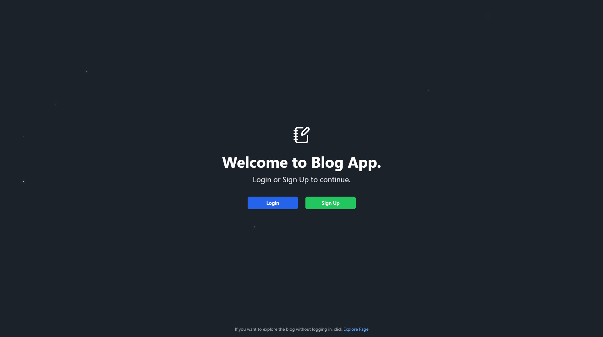
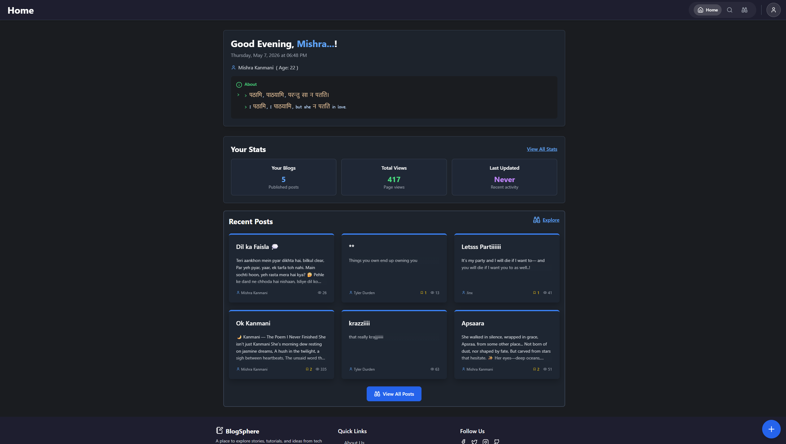
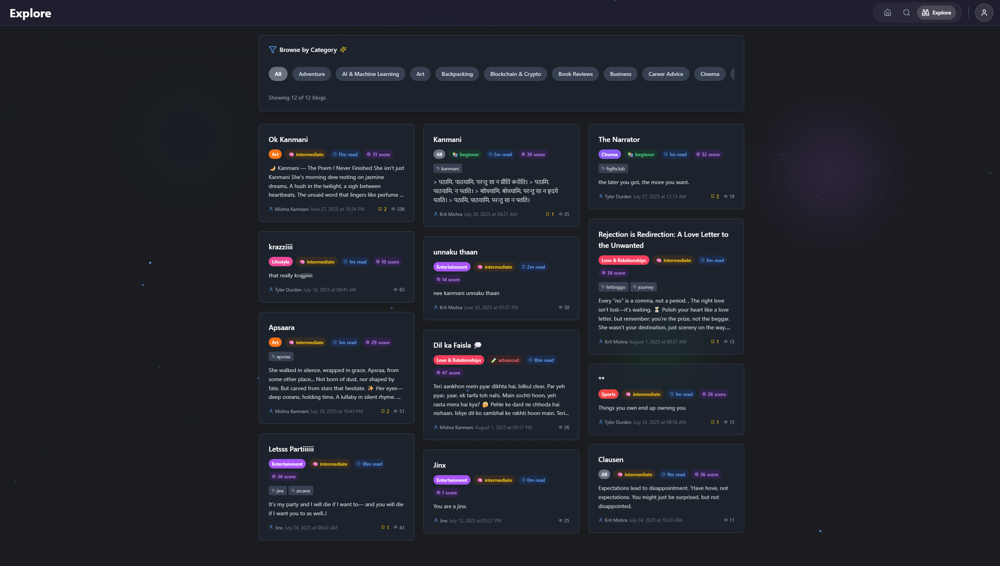
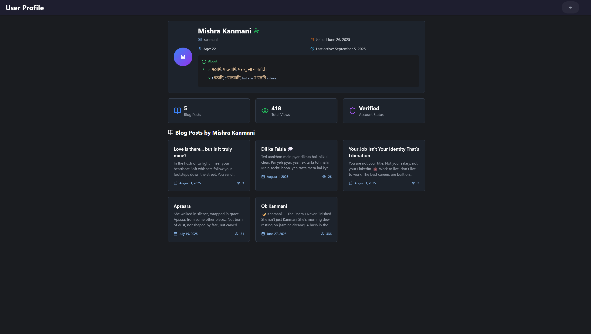
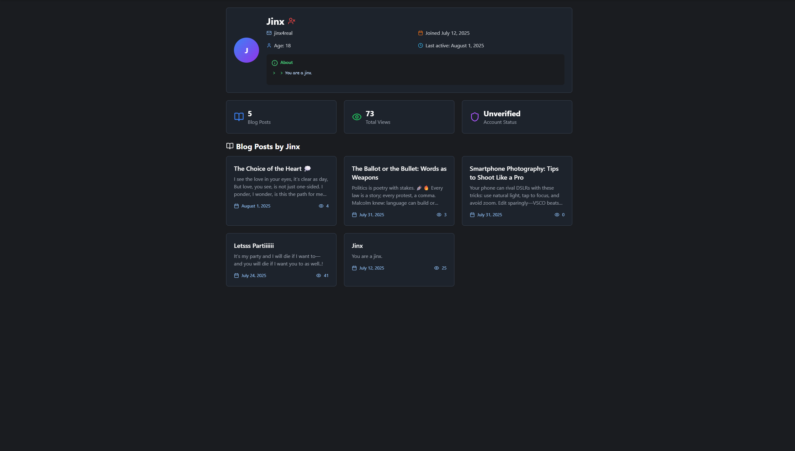
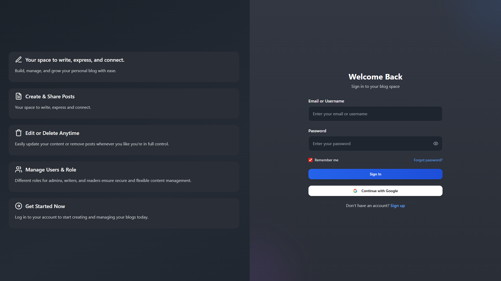

A cinematic entry point. The landing page greets users with typing effects, a deep galaxy backdrop, and an invitation to explore.
A modern, immersive platform focusing on content discovery and uninterrupted reading experiences.


Find your next favorite read!
Navigate through beautifully masonry-arranged cards. Find content that matters to you with our smart categorisation.
Manage your presence, track engagement metrics, and connect deeply with writers across the platform.
Track reads, views, and appreciation.
Discover the minds behind the stories.


Secure access with role-based management for readers and writers.
